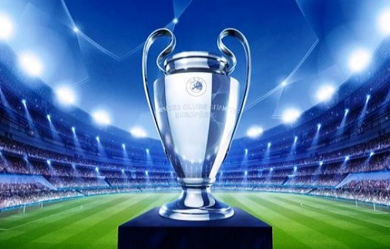

Historia
La UEFA Champions League, anteriormente conocida como Copa de Europa, es el torneo internacional oficial de fútbol más prestigioso a nivel de clubes entre las competiciones organizadas por la Unión de Asociaciones Europeas de Fútbol (UEFA). Disputada anualmente del mes de septiembre al junio siguiente, pudiendo variar el calendario según fases, la competición fue creada en la temporada 1955-56 bajo la denominación de Copa de Clubes Campeones Europeos (nombre original en francés Coupe des Clubs Champions Européens), con un formato de eliminación directa. En 1992 el torneo fue reestructurado incluyendo por primera vez un formato de competición de liga que posteriormente fue el paso previo a una fase eliminatoria por lo que fue rebautizado con su actual denominación para la edición 1992-93 consolidando dicho formato.
|

|
Equipo |
Titulos |
| REAL MADRID |
12 |
| BAYERN MUNICH |
5 |
| BARCELONA |
5 |
| MANCHESTER UNITED |
3 |
| JUVENTUS |
2 |
| OPORTO |
2 |
| CHELSEA |
1 |
| MONACO |
0 |
| PARIS SAING GERMAIN |
0 |
| TOTTENHAN |
0 |
|